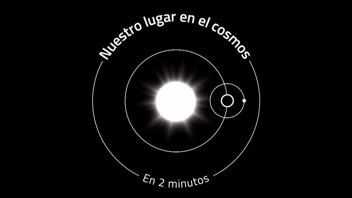
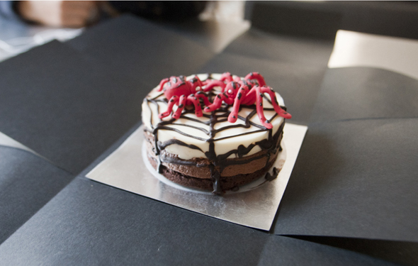
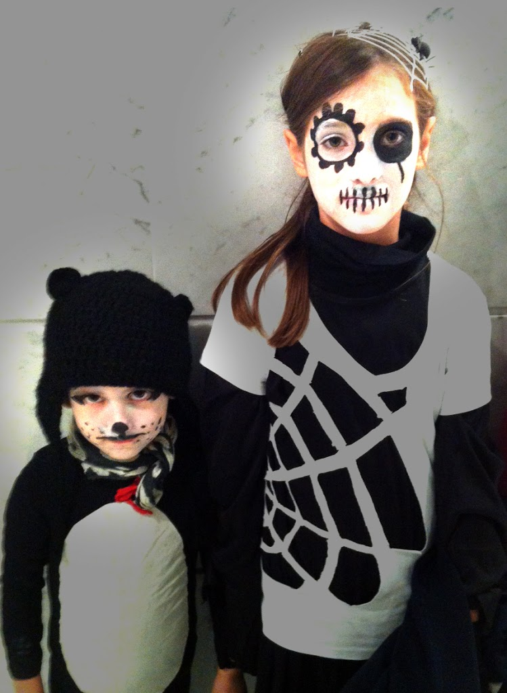

Facebook
Pinterest
Instagram
⌕ Suche
ES
EN
DE
☰ Menü
Home
Das Haus
Zubehör
Dekoration
Faltanleitung
Illustration
Trinkflaschen
Bastelheft
App
Blog
Feste
Weihnachten
Ostern
Halloween
Fasching & Kostüme
Valentinstag
Geburtstag
Mutter-/Vatertag
Schulanfang
Jahreszeiten
Frühling
Sommer
Herbst
Winter
Was machen
Spielzeug
Spiele
Druckvorlagen
Essen & Rezepte
Dekoration
Malen
Experimente
Draußen
Lernen
Tiere
Geschenke & Schmuck
Bauen & Tricks
Weitere Ideen
Material
Papier
Karton
Papierrollen
Recycling
Steine
Blätter & Natur
Stoff & Nähen
Inicio novedades
Kategorie
Inicio novedades
El cosmos

Halloween
Halloween Kuchen

Anlass
Fledermaus Laterne
Halloween
Halloween

Material
Halloween Fledermaus
Anlass
Hände Halloween
Anlass
Fledermaus
Verkleidung
Halloween Hemd
Verkleidung
Halloween Kopfschmuck
Halloween
Halloween